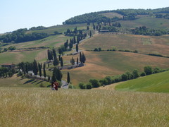

|
トスカーナを満喫した一日。
朝一でMTBを借り、町から坂道を降りて南の川を目標に走り出した。
糸杉の並ぶ白い道とブドウ畑。どこまでも続く丘陵。すばらしきトスカーナ。
小さな町に寄りながら南へ向かった。
例によって町は高台なので上るのがきつい。トスカーナは坂道ばかりなのでアシスト付きのMTBで助かった。
ただ、電動ユニットがかなり重いので、電源を入れないと普通の自転車よりつらい。バッテリー残量は常に確認。
Google map に出ている道を進んでいたが獣道みたいなところもあり、突き進んだらあちこち傷だらけになった。
| わざわざ馬に×がついている | 強気に突入して散々だった |
|
|
川や自然保護区などを巡って一周。川は泥質で濁っていたので残念。
走っていると道端から突然大きな鳥が鳴きながら逃げて行って驚くことが三回もあった。多分キジ。
| 良い写真を撮っていそう | 遠目には芝生のようだが意外と固い |
|  |
|
一旦ピエンツァに引き上げ、昼食後ワインを買って町の近くに出た。
眺めの良い道端に座って飲む。至福の午後。
この旅行の出発前につらいことがあって、その関係の連絡がトスカーナで休憩しているときにあり、
思い返して少し感傷的になってしまった。世界はこんなに広くて明るいのに。
夕方少し風が出て来たので、妙な遊びを始める。カメラを付けた凧を持ってきていたので空から撮影してみた。詳しくは
こちら
トスカーナは基本的に農作物を育てている私有地のようなので勝手に入りにくい。
広めの道端を探してしばらくがんばったら良い感じの写真が撮れた。
返却時間ギリギリに自転車屋へ。元気な店主のおばちゃんがこの地方の魅力をたくさん語ってくれた。
一年中綺麗だと言って写真を見せてくれたが、やっぱり4月頃の緑がベストではないだろうか。その時期にまた来たい。
夕食はパスタ。イタリアでは何度もパスタを食べたが、メインではないからかどこも意外と量が少ない。
小ぢんまりとしたピエンツァの町は落ち着く。
|